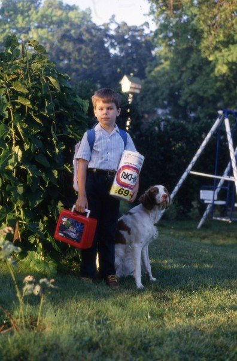
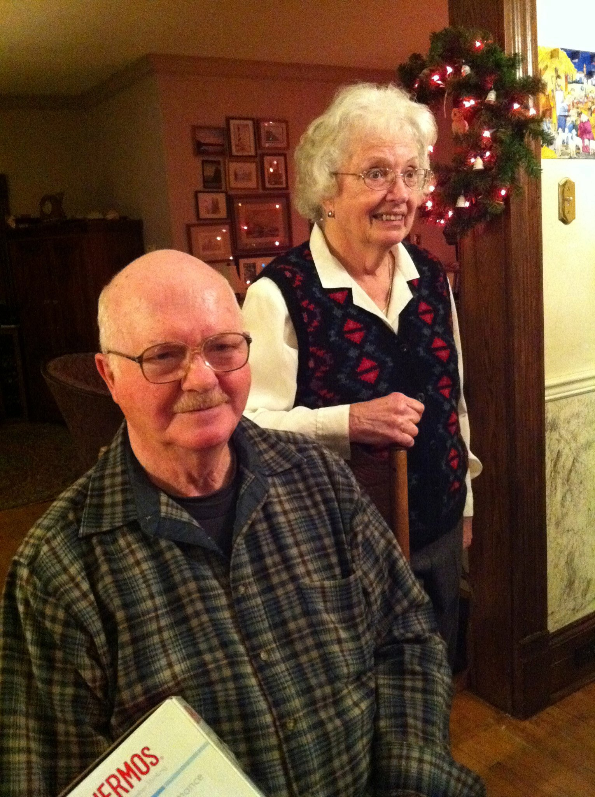
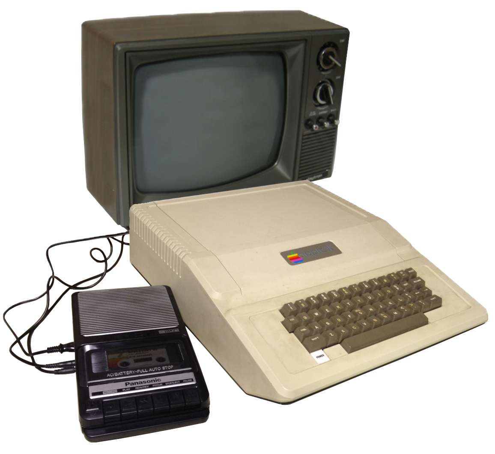
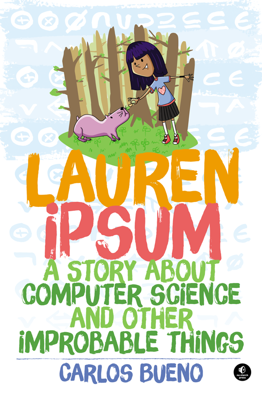
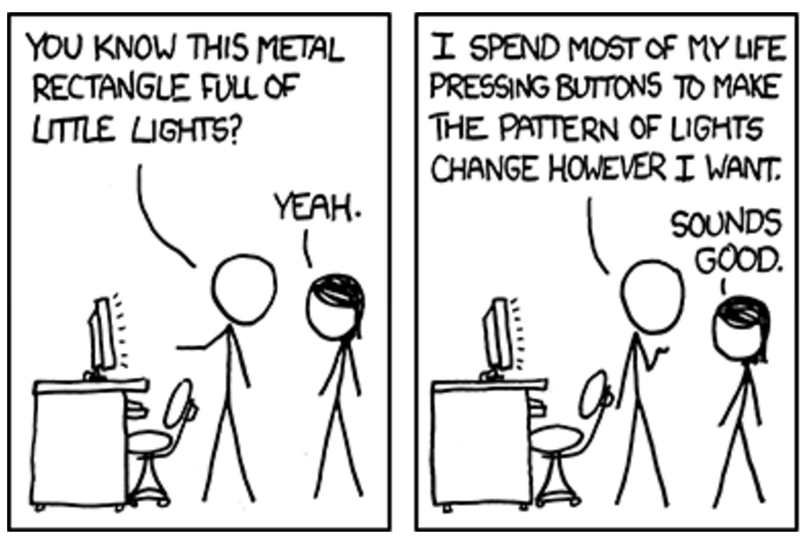

How to Eat Computers
Sunday December 6, 2015
A ten-minute talk about “my experiences with computer science” for Hour of Code. Given for first, second, and third-graders at the Léman Manhattan Preparatory School's Lower School on Friday December 4, 2015, and for seventh and eighth-graders at NYC MS 113 Ronald Edmonds Learning Center on Tuesday December 8. (slides)
I started with a cute demo of the say functionality at the Mac command line. It's much easier to get the computer to say hello than it used to be!
say Hello!
say I am a computer.
say Please do not eat me.@planarrowspace
Hi! I'm Aaron. This is my blog and my twitter handle. You can get from one to the other. This presentation and a corresponding write-up (you're reading it) are on my blog (which you're on).

This is me at the beginning of my academic career.
Back then, my family didn't have a computer at home.
So how did I learn about computers?
friends and family
One way I was lucky to learn some things was through friends and family.

These are my grandparents.
My grandfather used to program back when that meant plugging cables into different plugs.
He taught me some of the first things I learned about computers.
binary
One thing my grandpa taught me was binary.
Binary is fun and cool!
0
This is zero.
1
This is one.
Easy, right?
10
This is two.
11
This is three.
100
So what's this?
That's right, it's four!
So now you know binary.
Everything inside the computer is binary.
To get the computer to say “Hello”, it takes quite a lot of binary!
school
Another good way to learn things is at school.

At my old school, we had some computers that looked like this.
typing
Probably the most frequently useful thing I learned on those old computers was typing.
Typing is so important!
And I don't mean typing on a phone or a tablet. Touch screens are for babies.
You need to be able to touch type on a physical keyboard.
internet
Another source for learning materials is the internet.
typing.com
For example, you can learn and practice typing for free at typing.com.
If you can't type 80 words per minute, go to typing.com and keep practicing until you can!
If you're lucky, a very large part of your future will involve typing.
reading
Reading is yet another really great way to learn things.

When I was young, I read a book like this which let me start to program on those old computers at my school.
This book is a bit out of date now, but there are lots of great books that you should read!

This Lauren Ipsum book is a really fun story that introduces computer science ideas in the context of a cool adventure story. Read it!

This Think Python book is a more technical introduction to computer science and the Python programming language.
It's also super cool, and you can read the whole thing for free online! Just google 'Think Python'.

Cool cats read.
build things
You should also be learning things by building things.
When I was school we had these huge calculators with tons of buttons.
They're kind of clunky, but the great thing was that you could write programs directly on them, any time.
We made so many cool things!
JavaScript
Nowadays, computers with browsers are everywhere, which means YOU can program everywhere, with JavaScript inside the browser!
On my computer, with the Chrome browser, I can open up a JavaScript console with option-command-j.
By typing document.getElementById('js').innerHTML = '♥' here, I can change what my presentation says right here!
In the same way, JavaScript lets you play with programming and the web, any time!
take things apart
Another great way to learn about things is to take them apart.

It's not always as easy to take computers apart these days, but it's still a fun thing to do if you can.
Taking computers apart, and building new ones yourself too, are great ways to understand how computers work.
try things
Really a lot of learning is just about trying things.
concessionist, sandwich artist, computer salesperson, box cutter, clerk, assistant system administrator, experimentalist, brand manager, math teacher, English teacher, analyst, senior data services specialist, data science expert in residence, consultant, data scientist, data science teacher, senior data scientist, senior data scientist and software engineer
For example, I've tried a lot of jobs.
These are most of the job titles I've had since I was 15.
I've tried a lot of things, and I'm happy to say that my current job is the best ever. I do fun things with fun people, and I work from home with a hoodie on.

So this is what I look like at work.
Sometimes I look like this.

Sometimes I look like this.
Sometimes I look like this.

Sometimes I look like this.

And sometimes I look like this.
What do I do?
What do I actually do?
Good question!

A big part of what I do is programming. I'm programming one way or another every day. Designing and building programs explains the "software engineer" part of my job title.
(image from xkcd 722)

My job title also includes data scientist, which mostly means doing experiments with data to find the best solutions to the problems we're dealing with.
machine learning
Data science includes working with what's called "machine learning".
Computers are stupid.
They're so stupid, that we have to tell them how to learn things, and then we have to try to get them to learn something by looking at some data.

The main problem I'm working on right now is a lot like "Where's Waldo".
Can we get a computer to tell us where in the picture Waldo is?
Could the computer identify all the interesting things in the picture?
I don't have a good demo for the full problem I'm currently working on, but I do have my Interactive Perceptron Training Toy, which is different from the "Where's Waldo" example, and simpler, and shows a lot of the moving parts.
(Proceed to demo with a few points and training on the perceptron toy.)
here we go!
(This slide flashes in presentation mode...)
Thanks!
Thank you!
@planarrowspace
This is just me again.